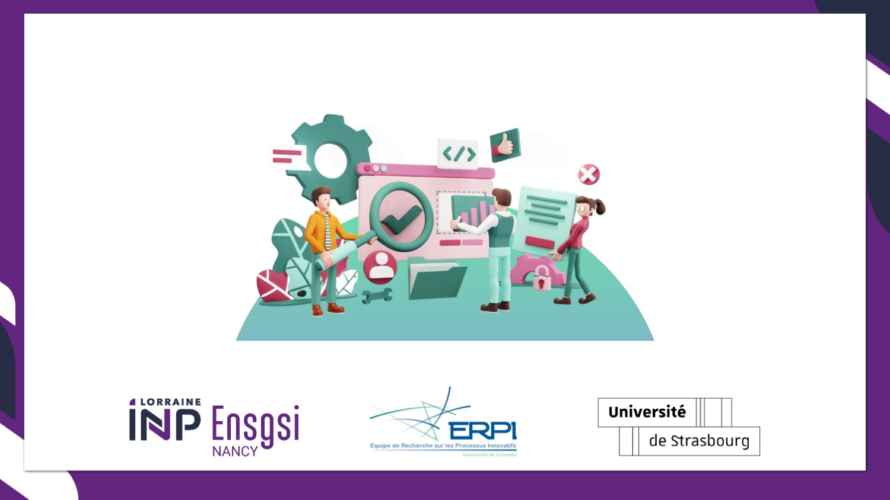

Introduction to Scientific Research
for Innovation Management
This course is designed to help students develop a comprehensive understanding of the scientific research approach and methods for innovation management. Topics will include the fundamentals of the scientific method and scientific inquiry, ethical considerations in research, strengths and weaknesses of various data collection methods, and basic methods of quantitative and qualitative data collection. Through discussion, article analysis, and hands-on practice, this course will teach students how to conduct a research project from beginning to end.
Read More →
